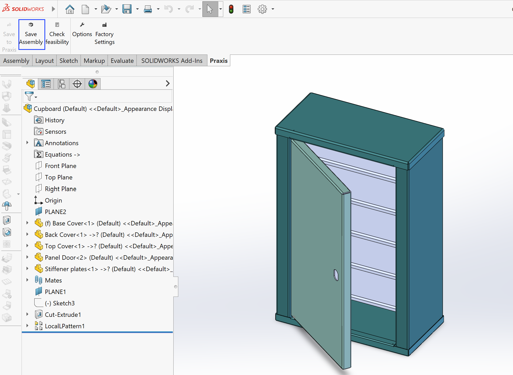
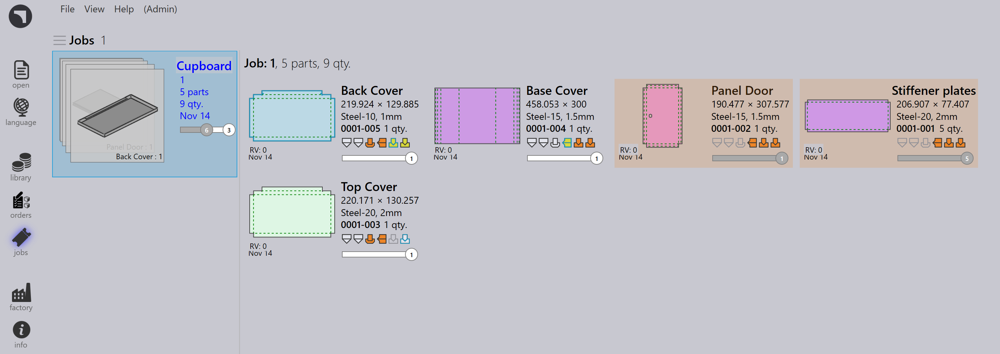

Guardar ensamblaje
La función Guardar Ensamblaje permite a los usuarios exportar ensamblajes de SolidWorks y sus piezas componentes directamente a la biblioteca de piezas de TruSmartCAM. Esto asegura que todas las piezas de chapa metálica, información de materia prima y cantidades de piezas sean transferidas con precisión para la planificación posterior, herramientas y creación de trabajos.
Esta funcionalidad es particularmente útil para gestionar ensamblajes completos como gabinetes, recintos o fabricaciones estructurales que involucran múltiples componentes de chapa metálica.
Pasos para guardar un ensamblaje
-
Inicie SolidWorks y abra el archivo de ensamblaje requerido.

-
En la barra de herramientas de TruSmartCAM, haga clic en Save Assembly. El diálogo Guardar grupo de módulos en Praxis aparece, resumiendo los detalles del ensamblaje.

-
El diálogo de ensamblaje proporciona la siguiente información:
-
Assembly Name - Muestra el nombre del ensamblaje de SolidWorks activo actualmente. Este nombre se usa como referencia predeterminada para el ensamblaje en TruSmartCAM.
-
Piezas totales - Indica el número total de instancias de componentes presentes en el ensamblaje de SolidWorks. Esto incluye piezas de chapa metálica y no de chapa metálica.
-
Piezas de chapa metálica - Muestra el número total de componentes de chapa metálica en el ensamblaje, junto con el recuento de piezas únicas de chapa metálica.
-
Piezas de chapa no metálica - Lista el recuento total y el número único de componentes no de chapa metálica detectados en el ensamblaje.
-
Unidades a producir - Especifica el número de ensamblajes (productos terminados) a producir. La cantidad ingresada se usa para calcular los requisitos totales de piezas en el trabajo o ensamblaje resultante dentro de TruSmartCAM.
-
-
Después de verificar los detalles, haga clic en OK.
-
TruSmartCAM guarda todas las piezas listadas en la tabla en la biblioteca de piezas, junto con su información de material asociada. (Para detalles de mapeo de materiales, consulte Resolución automática de material)

Opciones adicionales
Make job
-
Habilite esta opción para crear un nuevo trabajo de TruSmartCAM directamente desde el ensamblaje seleccionado, permitiendo operaciones inmediatas de planificación de trabajos y anidamiento.
-
Cuando se habilita, aparece el diálogo New Job, permitiéndole especificar:
-
Nombre de Job Reference (predeterminado: nombre del ensamblaje).
-
Customer y Comments (opcional).
-
Due Date, Priority, y Quantity para cada pieza.
-
Parámetros adicionales como configuraciones específicas del cliente o valores de rotación para cada pieza.
-
Haga clic en OK para crear y abrir el nuevo trabajo en TruSmartCAM.
-

Make assembly
Habilite esta opción para guardar el ensamblaje y sus cantidades correctas de piezas en la página de ensamblaje de TruSmartCAM. A diferencia de la opción Make Job, esto no abre el diálogo New Job durante el proceso.


|